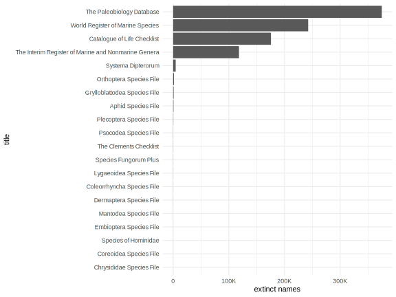
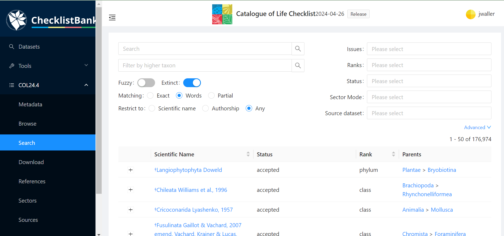

Working with extinct species on GBIF
GBIF users are often interested in getting occurrences of only living species or “no extinct” species. This seemingly straightforward request is often difficult to fulfill in practice.
Currently, there is no occurrence level filter for removing extinct species from an occurrence search. Additionally, there is no authoritative global extinct species list available from GBIF. This article discusses the difficulties and complexities of working with extinct species and some possible solutions.

Meganeura selysii (Brongniart, 1894) collected in France (licensed under http://creativecommons.org/licenses/by/4.0/)
isExtinct
GBIF has a species search term called isExtinct. This term is (as of the writing of this blog post) is not visible on the web UI, but it is available when using the API or rgbif/pygbif.
This search term will tell you whether a taxon was marked as “extinct” by the source checklist of the name. The isExtinct designation on the GBIF API is harvested from the Catalogue Of Life (COL) source datasets and from the other GBIF backbone constituent datasets of the GBIF backbone.
name_lookup(isExtinct=TRUE,limit=1000,offset=0)
species.name_lookup(isExtinct=True)
https://api.gbif.org/v1/species/search?rank=SPECIES&isExtinct=true
Most checklist constituents in the GBIF backbone do not publish any extinct taxa, meaning either that there are no extinct species within the group or the checklist simply doesn’t publish that information.
Around 35K species-ranked names are labeled as isExtinct in the GBIF backbone. Unfortunately, there is no efficient way to extract all 35K isExtinct species (+400K names) using the GBIF species API. The current limit for any species search is limit=1000. Therefore, one can only extract the first 1000 records from any search. However, one can use the offset parameter to page through the results, but this will be slow and inefficient (offset is also limited to 100,000). See Chechlistbank section below for a likely better solution.

Checklistbank
Checklistbank is a somewhat new service which stores checklist datasets that make of the GBIF backbone and the COL checklist (and other checklists too). It is now possible to download all taxa marked isExtinct in the COL checklist dataset using the checklistbank UI.

Alternatively, one can also extract all of the isExtinct names from the COL checklist dataset, using the Checklistbank API.
# export all extinct names
http://api.checklistbank.org/dataset/3LR/export.txt?extinct=true
# export from a certain group
## Trilobites taxonID=TRL
http://api.checklistbank.org/dataset/COL2022/export.txt?taxonID=TRL&extinct=true
You can look up other COL taxonID values on the COL website, just copy the last part of the URL after searching for the group you want.
- Odonata (B6LCL) https://www.catalogueoflife.org/data/taxon/B6LCL
- Trilobites (TRL) https://www.catalogueoflife.org/data/taxon/TRL
- Birds (V2) https://www.catalogueoflife.org/data/taxon/V2
When using the isExtinct term, one should keep in mind that the coverage and reliability of this term can vary between taxonomic groups and COL source datasets. This basic fact also explains why the isExtinct term is not more visible on the GBIF web portal.
isExtincton GBIF is only updated when the GBIF backbone is updated, so source datasets may be more up-to-date or disagree with the output of the GBIF API.
IUCN Threat Status
The term isExtinct is not always reliable for more recently extinct species. For more recently extinct species, iucnRedListCategory tends to work better. For example, no adult Golden Toads have been seen since May 15, 1989. While GBIF lists isExtinct=false for the Golden Toad, the iucnRedListCategory lists the Golden Toad correctly as “EXTINCT”.
Here are some examples of how to use iucnRedListCategory to search for extinct species and occurrences with rgbif and the API:
occ_search(taxonKey=2422444,iucnRedListCategory="EX")
name_usage(2422444,data="iucnRedListCategory")
# occ_download(pred(iucnRedListCategory,"EX"))
https://api.gbif.org/v1/species/2422444/iucnRedListCategory
The iucnRedListCategory is also available as a web UI search :
https://www.gbif.org/occurrence/search?iucn_red_list_category=EX
fossil occurrences
Finally, one might want to consider occurrences marked with the basis of record “FOSSIL SPECIMENS”. While fossil specimens may not always be extinct taxa, it is often useful for filtering out or cross-referencing potentially extinct occurrences.
# rgbif has a useful default function for removing fossil occurrences and other
# often filtered data, such as living specimens.
occ_download(pred_default())
occ_download(pred_not(pred("basisOfRecord","FOSSIL_SPECIMEN")))
from pygbif import occurrences as occ
occ.download('basisOfRecord !in ["FOSSIL_SPECIMEN"]')
Working with extinct taxa can be challenging, but hopefully you have found some solutions here. As always, if you haven’t found what you are looking for, you can always contact us at helpdesk@gbif.org.